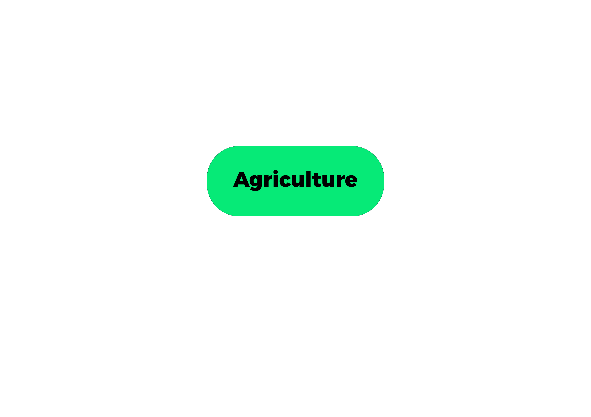
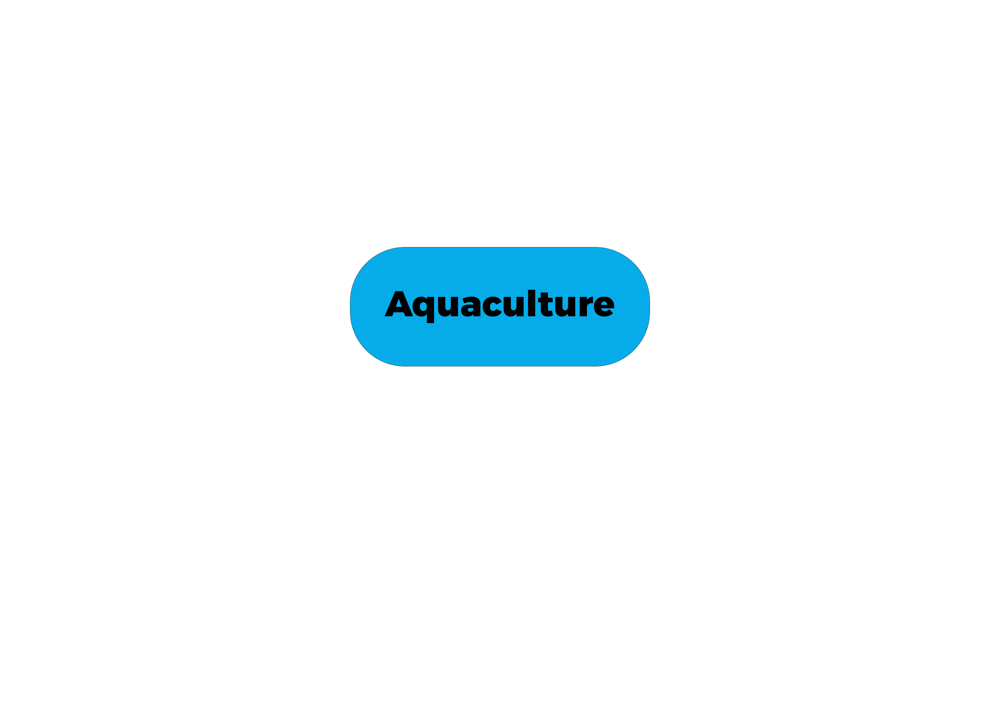

|  |  |

Welcome to our in-depth exploration of the agricultural and aquacultural frontiers of Africa, where the vibrant tapestry of traditional practices, modern innovations, challenges, and opportunities intersect to shape the continent's sustainable development. Africa, often referred to as the cradle of humankind, boasts a rich agricultural heritage that stretches back millennia, encompassing a dazzling array of farming techniques, crops, and livestock breeds uniquely adapted to the continent's diverse climates and ecosystems.
From the sun-drenched plains of the Sahel, where nomadic herders tend to their cattle under the scorching African sun, to the fertile river valleys of the Nile, where ancient civilizations first cultivated the land, Africa's agricultural traditions run deep, rooted in a deep connection to the land and its bountiful resources. Today, these traditions coexist with modern innovations, as African farmers embrace new technologies, practices, and market opportunities in their quest for greater productivity, resilience, and prosperity.
But Africa's agricultural journey is not without its challenges. The continent's farmers grapple with a myriad of obstacles, from the erratic impacts of climate change, which bring unpredictable rainfall patterns, prolonged droughts, and devastating floods, to the enduring barriers of inadequate infrastructure, limited access to finance, and markets. In many rural communities, farming remains a labor-intensive and subsistence-based activity, with smallholder farmers struggling to make ends meet in the face of mounting pressures.
Yet, amidst these challenges, there are signs of hope and resilience. Across the continent, governments, NGOs, and private sector stakeholders are mobilizing resources and expertise to support smallholder farmers, promote sustainable agricultural practices, and enhance food security. From the introduction of climate-resilient crop varieties to the expansion of irrigation infrastructure and the provision of extension services, efforts are underway to empower farmers with the tools and knowledge they need to thrive in an ever-changing environment.
Meanwhile, Africa's aquacultural sector is also experiencing a renaissance, as countries tap into the continent's vast aquatic resources to meet the growing demand for protein-rich food sources. From the shores of Lake Victoria, where tilapia and Nile perch are farmed in floating cages, to the mangrove-lined estuaries of West Africa, where shrimp and oysters thrive in brackish waters, aquaculture offers a promising pathway towards greater food security, economic growth, and environmental sustainability.
In the pages that follow, we invite you to join us on a journey through Africa's agricultural and aquacultural landscapes, where tradition meets innovation, and challenges spark opportunities for growth and transformation. From the bustling markets of urban centers to the remote villages of rural hinterlands, we'll explore the diverse practices, initiatives, and stories shaping the future of agriculture in Africa, and the vital role it plays in the continent's quest for prosperity and resilience. So, sit back, relax, and let's embark on this fascinating voyage together.
Copyright 2024 by Nathan Kibatu